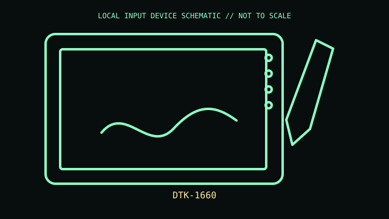

[ PEN TABLETS AND DIGITIZERS // IDENTIFIED COMPONENT ]
Wacom Cintiq 16
Pen display with Full HD screen; this record is the older DTK-1660 generation, not newer Cintiq models.

MODEL IDENTIFICATION: DTK-1660. Confirm the printed SKU, revision, bundle, region, and included accessories before repair or compatibility claims.
Model specifications
| Catalog leaf | Pen tablets and digitizers |
|---|---|
| Exact model / identifier | DTK-1660 |
| Mechanism and primary specifications | 15.6-inch IPS display, 1920 × 1080; active area about 345 × 194 mm; Pro Pen 2 with 8,192 pressure levels/tilt; HDMI, USB-A and external power via 3-in-1 cable. |
| Compatibility and interface caveats | DTK-1660 requires video plus USB and power through its supplied cable set; it is not USB-C-only. Color gamut and pen support differ from newer Cintiq 16 models. |
| Revision identification | Record the full label and software/firmware revision. Similar product-family names may use different protocols, components, connectors, or bundled accessories. |
Preservation and service
Protect etched display surface, retain 3-in-1 cable and power adapter, and avoid pressure on display edges. Clean with screen-safe microfiber.
Separate observed condition and test setup from vendor-published specifications; record host OS, driver/app version, cables, adapters, and accessories.
Primary manufacturer sources
- Wacom Cintiq product familyManufacturer documentation; verify the exact SKU, revision, region, and accessories against the unit label.
- Wacom DTK-1660 product listingManufacturer documentation; verify the exact SKU, revision, region, and accessories against the unit label.
Manufacturer support pages can change; retain the applicable manual and its revision in the physical equipment record.